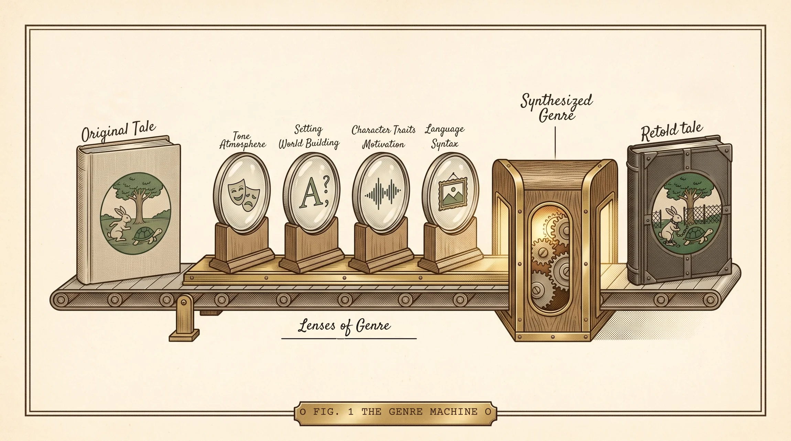

The Tortoise & the Hare
The story itself never changes: the hare brags, the hare naps, the tortoise keeps walking, the tortoise wins. Everything else is yours to transform.
One landscape page. The example is done; students run two genres of their own through the four lenses.

| Example · Wilderness / Survival | Genre 1 · | Genre 2 · | |
|---|---|---|---|
| Tone & Atmosphere |
The playful, fable-like tone shifts into a stark, high-stakes survival struggle where death and freezing temperatures replace cartoon whimsy. | ||
| Setting / World Building |
The sunny forest path becomes a frozen wilderness above the treeline — gray sky, deep snowdrifts, wind-scoured pines, and a finish line that means shelter. | ||
| Character Traits& motivation | The hare and the tortoise become humanized wilderness survivors and rivals, defined by physical endurance, practical labor, and instinct rather than anthropomorphic silliness. | ||
| Language / Syntax |
The repetitive, whimsical phrasing of the original story is replaced with clipped, minimalist sentences and sparse, muscular prose that mirror the urgency and coldness of the environment. |